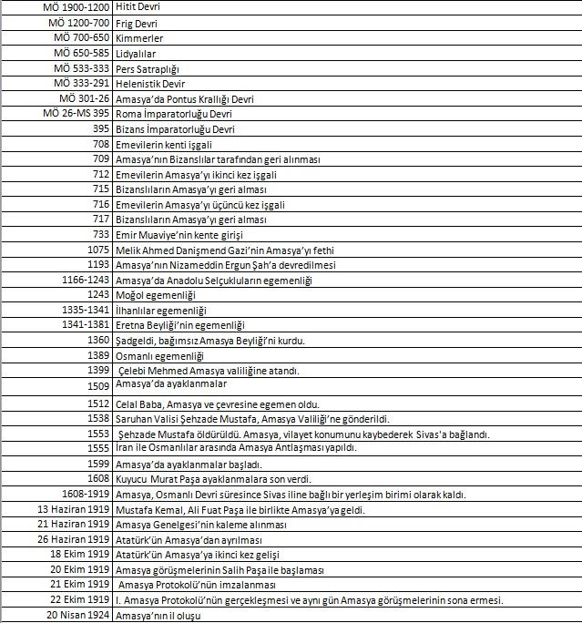

Bir gün Türkiye’de “Sıradışı İnsanlarıyla Ünlü Kentler Albümü” gibi bir çalışma yapılsa, kimsenin kuşkusu olmasın, Amasya bu albümün hem ilk sayfalarına yerleşecektir, hem de en çok yere sahip illerin başında gelecektir.
Osmanlı Devleti’nin kaderini belirleyen, sarayın çok önemli yöneticileri bu kentle ilişkili olduğu için kentin adının önüne “Şehzadeler Kenti” unvanı konmaktadır; öte yandan devlet egemenliğini temellerinden sarsan Babai ayaklanmasının önderi Baba İshak’ın mekânı da Amasya’dır. Bulunabilen eserleri yeryüzünün neredeyse bütün dillerine çevrilen Strabon; bilinen aşk imgelerinin çoğundan farklı olarak emekle, kent yaşamıyla, işlevsellikle ve yaşamsallıkla ilişkilendirilmiş bir aşk söylencesinin kahramanları Ferhat ile Şirin’le hemşeridir. İşte bu kent Karadeniz Bölgesi’nin orta kısmında yer almaktadır ama deniz kıyısı olmadığı için iklim bakımından da yaşam kültürü açısından da bir deniz kentinden çok İç Anadolu bölgesinin özelliklerini sergilemektedir.
Amasya doğudan Tokat, güneyden Tokat ve Yozgat, batıdan Çorum, kuzeyden Samsun illeriyle çevrilidir. İlin yüzölçümü 5.701 km²dir.
Dünyaca ünlü gezgin ve coğrafya yazarı Strabon, kendi kentini şöyle tanımlamaktadır: “… Benim kentim içinde İris (Yeşilırmak) nehrinin aktığı geniş ve derin bir vadide kurulmuştur. İnsan emeği buraya hem kent, hem kale karakterini kazandırmıştır. Çünkü burası çok yüksek ve sarp kayalardan oluşmakta ve bu kaya kütleleri dimdik bir biçimde nehre doğru inmektedir... Ve nehrin sahilinde kentin kurulmuş olduğu bölümünde bir duvar ve her iki tarafta da sivri tepelere doğru uzanan duvarlar vardır. Kayadan oluşan bu tepeler iki tane olup doğal bir şekilde muhteşem birer kule gibi yükselmektedir. Bu çevre içinde kralların hem sarayları hem de mezar anıtları bulunmaktadır. Her ne kadar şimdi bir eyalet ise de Amaseia (Amasya) bir zamanlar krallara aitti...” İl genelinin deniz seviyesinden ortalama yüksekliği (rakım) 1.150 m, il merkezinin ise 411.069 m.dir. Amasya ve çevresi çok farklı jeolojik dönemlerin ortamlarında oluşmuş birbirinden çok farklı kaya toplulukları ile zengin ve oldukça karmaşık bir jeolojik yapıya sahiptir. Bölgede gözlenen kaya birimleri günümüzden yaklaşık olarak 430 milyon yıl önce oluşmuştur. Amasya, “Sakarya Kıtası” olarak isimlendirilmiş eski bir kıtanın doğu uzantısını oluşturan; batıda Çankırı havzası, güneyde Neotetis okyanusunun sınırı, kuzeyde ise Kuzey Anadolu Fayı ile sınırlanan Tokat masifinde yer almaktadır. Bu gerçekten görkemli coğrafik bölge, “Pontidler” olarak adlandırılan ve tüm Karadeniz şeridi boyunca izlenen dağ kuşağının bir parçasıdır. Amasya hem Yeşilırmak Nehri’nin ana kollarının birleştiği hem de dağların birleştiği bir noktadadır. Bunun jeolojik ve üretim kültürü bakımından karşılığı şudur: Amasya engebeli bir yüzey şekline sahiptir ama bu kentin düzlükleri hem tarımsal üretim, hem yaşama kültürü bakımından verimli ve zengindir. Amasyalı aristokrat bir ailenin çocuğu olan Strabon, Amasya’da doğmuştur. Strabon Nysalı Aristodemos, Seleukialı Xenorcos, Tyrannion gibi dönemin ünlü eğitimcilerinden dersler almıştır. Nil yöresini gezen Strabon’un gençken kendi vatanı olan Amasya’ya, Toros Dağları’ndaki dar geçitlere, o dönemde Augustus’un olduğu Kerinthe’ye gittiği bilinmektedir. MÖ 44 yılında Roma’ya giden coğrafya bilgini, orada uzun yıllar kalmıştır. Alexandria’da uzun süre kalan Strabon, Anadolu’da Sinop ve Kyzikos, Nikaia, Kapadokya, Tarsus, Seleukia, Mylasa, Alabanda, Trableis, Synnada, Magnesia, Smyrna gibi kentleri de gezmiştir. Strabon’un, tarih, coğrafya ve felsefe konularında çalıştı ve yapıtları vardır. 43 ciltlik tarih çalışması, en önemli yapıtlarındandır. Eserin ilk dört cildi İskender tarihini anlatır. Biyoloji, matematik, astronomi, coğrafya alanlarında yapıtlar üretmiştir. “Geographica” (Coğrafya) pek çok dile çevrilen en ünlü yapıtıdır.
AMASYA’NIN KISA TARİHİ Avrupalı tarihçiler Maspero ve Morgan’a göre Hitit Konfederasyonunu oluşturan 13 hükümetten biri de Amasit’tir. Amasya Kalesi ve civarı bu hükümetin merkeziydi. Amasya’da höyüklerde bulunan çanak çömlek, silah kalıntıları ve mimari izler, kentin tarihinin Neolitik ve Kalkolitik çağlara indiğini göstermektedir. Amasya’nın bir akarsu kenarında olması, çeşitli akarsuların yolu üzerinde bulunması, denize ulaşım kolaylığı, daha sonraki yüzyıllarda ipek yoluyla ilişkilenmiş olması gibi doğal özellikleri burada yerleşik yaşamın kurulmasına olanak sağlamıştır. İlk Tunç Çağı ve Orta Tunç Çağı: Ovasaray Köyü Hamam Tepesi Höyüğü, Sarımeşe Künbet Höyük, Keşlik ve Ayvalıpınar höyükler ile Suluova ilçesi Kanatpınar Köyü, Devret Höyük ve Deveci Köyü, Yoğurtçu Baba Höyükleri, Amasya’da Kalkolitik Çağa ilişkin önemli veriler sunmaktadır. Amasya’da, İlk Tunç Çağı’nda (MÖ 3000-2500) yoğun bir yerleşmenin olduğu bilinmektedir. Bu dönem yerleşmelerine merkez ilçedeki Yassı Höyük (Oluz Höyük), Gümüşhacıköy’deki Sallar Höyük, Merzifon, Hayrettin Köyü, Delicik Tepe ve merkeze yakın Kayadüzü höyükleri Göynücek ilçesindeki Gediksaray Höyük, Alakadı Köyü, Türkmenlik Tepe Höyüğü örnek verilebilir. Amasya, Mezopotamya yazılı belgelerinde, Orta Tunç Çağı’nda (MÖ 2500-2000) “Hatti Ülkesi” olarak bilinen uygarlığın sınırları içerisinde ve Anadolu’da güçlü bir uygarlık kurmuş olan Hattilere ait önemli yerleşmelerden biridir. Amasya Merkez ilçeye bağlı Mahmatlar Höyüğü bu bakımdan önemli bir bulgudur. Daha sonra Amasya’yı da içeren bölgeye egemen olan Hititlere dâhil olmuştur. Hititlerin Amasya’daki önemli yerleşim yerlerinden biri Amasya Merkez Doğantepe (Zara) Beldesi’dir. Bu beldede bulunmuş olan ve MÖ 1400-1200 yılları arasına tarihlendirilen Hitit Fırtına Tanrısı Teşup’un bronz heykelciği günümüzde Amasya Müzesi’nde sergilenmektedir. Hitit egemenliğinin son bulmasıyla Anadolu’da başlayan; “Karanlık Çağ” olarak adlandırılan ve 400 yıldan fazla devam eden bir dönemin ardından Friglerin egemenliği en belirgin egemenliklerden biridir. MÖ 750’den sonra siyasal bir güç olarak tarih sahnesine çıkan Frigler, Kral Midas döneminde (MÖ 725-675) sınırlarını genişletmiş ve bunun sonucunda Amasya yöresi de Friglerin egemenlik sahası içerisinde kalmıştır. Frigler, MÖ 676 yılında Kafkaslar üzerinden gelen Kimmerlerin şiddetli saldırıları karşısında dayanamayarak kısa sürede güçlerini kaybetmiş ve yıkılma sürecine girmiştir. Yeni egemenler Karadeniz Bölgesi’nde yayılmış, bu dönemde Amasya ve civarı da Kimmerlerin egemenlik alanına girmiştir. Kimmerler pek çok yanlarıyla birlikte ağırlıklı olarak savaş araç gereçleriyle anılan bir devir yaratmıştır. Amasya Gümüşhacıköy’ü, İmirler’deki bir kurgandan çıkarılarak Amasya Müzesi’ne getirilen madenî savaş aletleri de bu döneme ait eserlerdendir. Lidyalılar, Medler, Persler: Anadolu’daki iki büyük güç olan Lidya ve Med devletleri arasında beş yıl boyunca süren savaş son bulunca Kızılırmak sınır olarak kabul edilmiş ve bunun üzerine Amasya, Pers egemenliğine kadar Medlerin sınırları içerisinde kalmıştır. Kısa süren Med egemenliğinden sonra Amasya, MÖ 547/46 tarihinde Pers İmparatorluğu’nun kurucusu Kyros’un Lidya kralı Kroisos’u yenmesi üzerine Anadolu’nun büyük çoğunluğu gibi Pers idaresi altında kalmıştır. Bu dönemde Amasya yaklaşık iki yüz elli yıl boyunca “Kapadokya Satraplığı” olarak bilinen bölgenin doğu sınırları içerisinde kalmıştır. MÖ 333 yılında meydana gelen İssus Savaşı’nda; Pers kuvvetlerinin Büyük İskender’in güçleri karşısında yenilmesi sonucunda, Amasya’nın da içinde bulunduğu Kuzey Kapadokya Bölgesi dışında Anadolu’nun büyük bir kısmı Makedonya Krallığı’nın egemenliğine girmiş ve böylelikle tarihte Helenistik Çağ olarak bilinen ve Anadolu’da etkisini daha çok kültürel ve sanatsal boyutta hissettiren bir dönem başlamıştır. Bu dönem, özü itibariyle doğu ile batı inanç ve kültürlerinin sentezi olan bir dönemdir. Büyük İskender’in ölümünden sonra halefleri imparatorluğun birliğini sağlayamamış ve imparatorluk çeşitli krallıklara bölünerek dağılmıştır. Bu gelişmeler yaşanırken MÖ 301 yılında Pers kökenli Mithridates Ktistes, Mithridates Krallığını kurarak Amasya’yı başkent yapmıştır. Başkentin V. Mithridates Euergetes (MÖ 150-120) döneminde Sinop’a nakledilmesine kadar uzun yıllar Mithridates Krallığı’nın başkenti olarak kalmış olan Amasya’da, büyük bir imar faaliyeti başlamış ve özellikle Mithridates Eupator döneminde bu faaliyetle birlikte şehir bir kültür merkezi haline gelmiştir. Bu dönemde; Mithridates Krallığı ile Roma İmparatorluğu arasında özellikle V. Mithridates zamanında gelişen iyi ilişkiler, Mithridates Eupator döneminde (MÖ 111-63) tersine dönmüş ve bunun sonucunda uzun yıllar süren Mithridates savaşları yaşanmıştır. En son MÖ 63 yılında Mithridates Eupator ile Romalı General Pompeius’un orduları arasında yapılan savaşta Eupator’un yenilmesi üzerine Amasya, Roma askerleri tarafından işgal edilerek tahrip edilmiş, Pompeius, Mithridates Krallığı’nın egemenliğine son vererek topraklarını Bithynia bölgesiyle birleştirerek Bithynia-Mithridates Eyaleti’ni oluşturmuş, Amasya ve civarı Roma egemenliği altına girmiştir. Roma İmparatorluğu ve Bizans Devri: Parthların Karia’ya kadar olan bölgeyi işgal etmeleri üzerine Roma İmparatoru Antonius’un kuvvetleri Parthları yenerek onları Anadolu’dan atmıştır. Bu olaydan sonra Anadolu’ya gelen Antonius, Parthların saldırılarını önlemek amacıyla kendi toprakları ile Parthlar arasında tampon bir bölge oluşturmak için bazı küçük krallıklar kurdurmuştur. MÖ 39 yılındaki bu gelişmeye göre; içinde Amasya’nın da bulunduğu Mithridates Bölgesi, II. Pharnakes’in oğlu Darius’a verilmiştir. MÖ 25 yılında İmparator Augustus (MÖ 27-MS 14) kendisine bağlı Provincia Galatia Eyaleti’ni kurarak birçok bölgeyle birlikte Mithridates Galaticus Bölgesi’ni de bu eyalete bağlamıştır. Roma İmparatorluğu döneminde eyalet statüsünde olan Amasya, aynı zamanda eyaletler arası yol sisteminin de merkezi konumuna gelmiştir. Örneğin Galatya ve Kapadokya yolları Amasya’da son bulmaktadır. Amasya’da İmparator Domitianus’tan (MS 81-96) itibaren Severus Alexander (MS 222-235) dönemine kadar şehir sikkeleri darp edildiği de bilinmektedir. Bu sikkelerden birçoğu günümüzde Amasya Müzesi sikke koleksiyonunda yer almaktadır. Amasya şehri; İmparator Diocletianus sonrasında Diospontus’un dinsel ve idarî merkezi durumuna gelmiş ve 8. yüzyıldan itibaren ise Bizans’ın askerî vilâyetlerinden (thema) olan Armeniakon Kaleleri arasında yer almıştır. Anadolu Selçuklular ve Beylikler Devri: Büyük Selçuklu ordusunun 1071 Malazgirt Savaşı’nı kazanması üzerine Sultan Alparslan’ın mahiyetinde bulunan üst düzey komutanlar, Anadolu içlerine doğru akınlara başlamıştır. Bu akınlar sonucunda Anadolu’daki Bizans egemenliği sona ermiş ve kazanılan topraklarda, fetihleri yapan komutanlar Selçuklu Devleti’nin izniyle içişlerinde bağımsız beylikler kurmuşlardır. Bu süreçte Amasya ve civarı Danişmend Ahmet Gazi tarafından fethedilerek bölgede Türk egemenliği dönemi başlamıştır. Danişmendliler’in yaklaşık yüzyıl süren egemenlik dönemi Selçuklu Sultanı II. Kılıç Arslan’ın 1175 yılında Amasya’yı ele geçirmesiyle sona ermiştir. Amasya da Selçuklu egemenliği altına girmiştir. II. Kılıç Arslan uzun süren saltanatı sırasında Selçuklu Devleti'ni on bir oğlu arasında paylaştırmıştır. Bu paylaşım sırasında Amasya Nizameddin Argunşah’ın hissesine düşmüştür. Nizameddin Argunşah’ın kardeşi II. Rükneddin Süleymanşah’ın (1196-1204) Selçuklu saltanatını ele geçirmesi üzerine birçok yöre gibi Amasya da bu sultana bağlı bir il haline gelmiştir. Babai İsyanı, Moğollar, Eratna Devleti: Anadolu Selçuklu Hükümdarı Alâeddin Keykubad, Moğolların bir tehdit unsuru haline gelmesi üzerine olası bir Moğol saldırısına karşılık komşusu Harezm beylerinin deneyimlerinden yararlanmak amacıyla bazı illeri onlara timar (dirlik) olarak vermiştir. Amasya bu dönemde timar olarak Bereket Han’a verilmiştir. Sultan Alaaddin Keykubad (1220-1237) sonrasında ülkenin iyi yönetilememesi Selçuklu Devleti’nde bazı toplumsal olayların meydana gelmesine neden olmuştur. Babaîlerin isyanı bu dönemde ve daha sonraki dönemleri önemli ölçüde etkileyecek büyük bir ayaklanmadır. Baba İlyas önderliğinde başlayan bu başkaldırıda, Baba İshak hareketi Kefersud Köyü’nden başlatmış ve bu başkaldırı süresince yaşanan gelişmelerde Amasya önemli bir tarihi mekan olarak olaylara tanıklık etmiştir. Başkaldırının büyüyerek yayılması sonucu, Sultan II. Gıyaseddin Keyhüsrev (1237-1246) ihtiyaten Kubadabad Kalesi’ne çekildi. Bu sırada Amasya Subaşılığı’na atanan Armağanşah hareketin bastırılması için görevlendirildi. Sonuçta bastırılan Babaîler başkaldırısının önderi Baba İlyas, Hacı Armağanşah tarafından tekkesinde ele geçirilerek Amasya Kalesi burçlarına astırıldı. Selçuklu Devleti’nin 1243 Kösedağ Savaşı’nda Moğollara yenilmesinden sonra Anadolu’nun neredeyse her yanı yağmalanmaya başlanmış ve Selçuklu Devleti yarım yüzyılı geçkin bir süre Moğollar tarafından yağmalanmış ve bundan Amasya da etkilenmiştir. Anadolu’yu işgal etmiş olan Moğollar daha çok Amasya’nın da içinde bulunduğu Orta Anadolu Bölgesi’ne yerleşmişlerdir. İlhanlı hükümdarı Ebu Said Bahadır Han’ın 1335 yılında ölümü sonrasında, İlhanlıların Anadolu genel valisi bulunan Sultan Alâeddin Eratna bağımsızlığını ilan ederek Eratnalılar Devleti’ni kurmuş ve Amasya 1341 tarihinde Eratnalılar’ın egemenliği altına girmiştir. Sultan Eratna’dan sonra devlet yönetimi otoritesini önemli ölçüde yitirmiş, bozulmalar yaşanmıştır. Eratna Devleti naibi Kadı Burhaneddin ile 1381 yılında yaptığı savaşta hayatını kaybeden Hacı Şadgeldi Paşa’dan sonra oğlu Fahrettin Ahmet Bey Amasya Emirliği görevini üstlenmiştir. Osmanlı Devri: Yıldırım Bayezid’in Ankara Savaşı’nda (1402) Timur’a yenilerek esir düşmesi ve sonrasında şehzadeleri arasında meydana gelen taht kavgaları üzerine, Fetret Devri olarak bilinen bu dağılma sürecinde Osmanlı birliğini sağlamaya çalışan ve bunda da başarılı olan Çelebi Sultan Mehmet, bu mücadele yıllarında Amasya’yı kendisine merkez edinmiştir. 1402 yılında Yakut Paşa’nın Amasya Emiri olduğu dönemde, Timur tarafından Kara Devletşah Amasya’ya emir olarak atanmış, fakat Kara Devletşah, Amasya halkı ve ileri gelenlerince “zalim bir insan” olarak bilindiğinden onun emirliği tanınmamış ve şehre girmesine izin verilmemiştir. Çelebi Sultan Mehmet, Kara Devletşah’la savaşarak bozguna uğratmış ve Kara Devletşah savaş meydanında öldürülmüştür. Osmanlılar Devri’nde Amasya, 15. yüzyılın ilk yarısından itibaren şehzadelerin görev yaptığı bir sancak ve aynı zamanda Eyalet-i Rum’un da merkezi konumundadır. Amasya, Yörgüç Paşa’nın Beylerbeyi olduğu dönemde (1422-435); Sivas, Tokat, Çorum ve Samsun sancaklarından müteşekkil bir vilayettir. Bu dönemde Amasya’ya “Vilayet-i Rum” deniliyordu. Osmanlılar Devri’nde Amasya’da görülen önemli olaylardan biri de tarihte Celalî İsyanları olarak bilinen toplumsal olaylardır. Amasya’da büyük kargaşaların yaşandığı bu dönemde, 16. yüzyılda Celalî grupları daha çok Yeşilırmak Havzası’nda hareket etmiştir. Amasya, Osmanlı İmparatorluğu devrinde, tarihsel bir antlaşmaya da ev sahipliği yapmıştır: 1555 yılı Nisan ayı sonunda yapılmış olan ve tarihe “Amasya Antlaşması” olarak geçen bu antlaşma İran-Safevî Hanedanı’yla yapılmış ilk antlaşmadır. Bu sırada Kanunî Sultan Süleyman Amasya’da ikamet etmekteydi. Cumhuriyet Devri: Sivas Vilayeti’ne bağlı Amasya Sancağı’nın Milli Mücadele’de önemli bir yeri bulunmaktadır. Birinci Dünya Savaşı’ndan yenik çıktığı kabul edilen Osmanlı Devleti ile İtilaf Devletleri arasında 30 Ekim 1918’de Mondros Ateşkes Anlaşması imzalanmıştır. Bu anlaşmayı kendi çıkarları doğrultusunda yorumlayan İtilaf Devletleri, Anadolu’yu yer yer işgal etmiştir. Bu işgaller karşısında Anadolu Halkı, Müdafaa-i Hukuk Cemiyetleri’ni kurmuştur. Mustafa Kemal, padişah ve hükümetiyle bir kurtuluş mücadelesi verilemeyeceğine, kurtuluşun bir halk hareketiyle gerçekleşebileceğine inandığından Anadolu Halkı ile buluşmak, Kuvay-i Milliye güçlerini birleştirmek üzere 9. Ordu Müfettişi göreviyle 16 Mayıs 1919’da İstanbul’dan ayrılıp, 19 Mayıs 1919’da Samsun’a, 25 Mayıs 1919’da Amasya Sancağı’na bağlı Havza Kasabası’na gelmiştir. Mustafa Kemal Paşa, Samsun’dan ayrılmadan önce Zile’de bulunan Binbaşı Cemil Vahit (Toydemir) Bey’den Amasya hakkında bilgi istemiş, Amasya’daki en nüfuzlu şahsiyetin Müftü Hacı Tevfik Efendi olduğunu öğrenmiştir. 26 Mayıs 1919 günü Havza’dan Amasya Müftüsü Hacı Tevfik Efendi’ye Havza’da yaptığı konuşmanın bir özetini ve Amasya’ya doğru yola çıkacağını bildirmiş ve söz konusu telgrafına çok kısa sürede şu cevabı almıştır. “-Amasya Halkı, Müdafaa-ı Vatan ve Muhafaza-ı Din ve Devlet yolunda mücadele edenleri bağrına basmakla müftehir olacaktır…” Amasyalılar, 12 Haziran 1919’da Culus Tepe’de konuğunu karşılarken Müftü Hacı Tevfik Efendi, Mustafa Kemal Paşaya hitaben “-Paşam! Bütün Amasya emrinizdedir…Gazanız mübarek olsun!...” demiştir.
